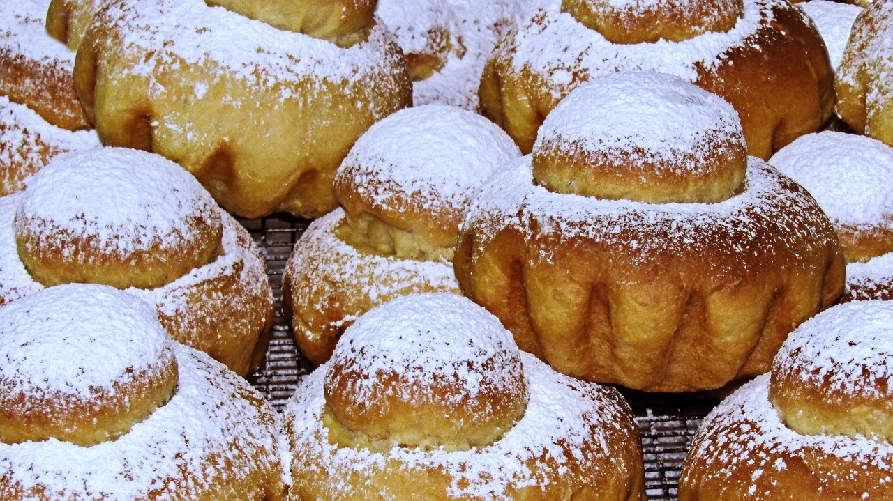

Brioche de Padaria

INGREDIENTES
- 4 ovos
- 400ml de leite morno
- 200g de manteiga ou margarina
- ¾ de xícara de chá de açúcar
- 1kg + 1 xícara de chá de farinha de trigo
- 20g de fermento biológico seco
- 1 colher de café de sal
- ovos batidos (para pincelar)
Modo de Preparo
- Em uma bacia, misture o leite, o açúcar, o sal e o fermento biológico seco.
- Acrescente os ovos e a manteiga ou a margarina e mexa com as mãos.
- Adicione 1 kg de farinha de trigo, aos poucos, enquanto mistura com as mãos.
- Transfira a massa para uma bancada e vá adicionando o restante da farinha de trigo,
enquanto sova bem a massa.
- O ponto da massa é quando ela desgrudar das mãos,
mas ficar ainda um pouco pegajosa ao toque.
- Volte a massa para a tigela e deixe crescer até ela dobrar de volume.
- Modele os brioches (confira no vídeo como fazer) e coloque-os em uma forma polvilhada com farinha de trigo.
- Deixe crescer novamente, até dobrarem de volume.
- Pincele com ovos batidos e leve ao forno médio preaquecido até eles dourarem (entre 25 e 30 minutos).
- Retire do forno, pincele manteiga ou margarina sobre os brioches e sirva.
Fonte da receita
Fonte original da receita.